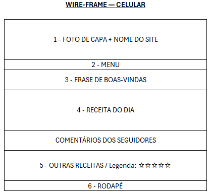
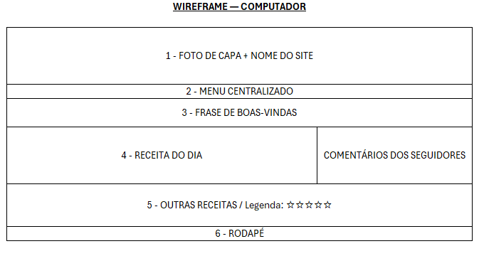

Nome do Site
Receitas Práticas para o Dia a Dia
Escolhi esse nome porque quero ajudar pessoas que têm pouco tempo para cozinhar a encontrar receitas simples e fáceis de preparar no dia a dia.
Finalidade do Site
O objetivo do site é oferecer receitas rápidas e fáceis para pessoas que precisam organizar suas refeições durante a semana. Cada receita terá uma lista de ingredientes e o modo de preparo, ajudando os visitantes a escolher e preparar suas refeições.
Cenários
- Quais receitas posso preparar quando estou no meio da correria?
- Quais ingredientes preciso para fazer essa receita?
- Como posso preparar algo gostoso e simples para saborear no fim de um dia de trabalho?
Esquema de Cores
Escolhi o laranja suave (#D98B55) para os títulos e detalhes do site, pois combina com a ideia de receitas e deixa o visual acolhedor.
O creme claro (#FFF5EB) será usado no fundo da página para deixar o visual leve.
O marrom escuro (#3D332D) será usado nos textos para facilitar a leitura.
Tipografia
Escolhi duas fontes para dar ao site um visual parecido com um caderno de receitas.
Caveat: será usada nos títulos para lembrar a escrita à mão.
Arial: será usada nos textos, ingredientes e modos de preparo para facilitar a leitura.
Wireframe
Versão para celular

Versão para computador
